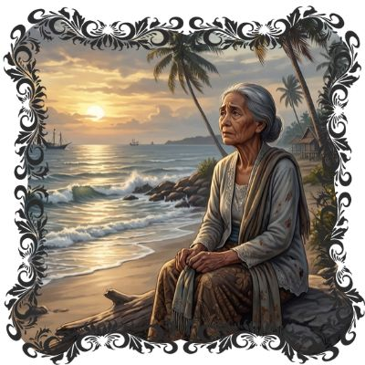

Malin Kundang
Kategori: Cerita fiksi

Di sebuah gubuk reyot yang berdiri rapuh di pesisir Pantai Air Manis, hiduplah seorang perempuan tua bernama Mande Rubayah bersama putra semata wayangnya, Malin Kundang. Sejak suaminya menghilang ditelan badai laut bertahun-tahun silam, Mande membanting tulang seorang diri demi menyambung hidup. Meski tubuhnya kian ringkih dimakan usia, kasih sayangnya kepada Malin tak pernah surut sedikit pun.
Malin tumbuh menjadi pemuda yang tampan, cerdas, dan cekatan. Namun, melihat ibunya terus hidup dalam kemiskinan membuat hati Malin gelisah. Suatu hari, sebuah kapal dagang besar berlabuh di dekat desa mereka. Malin melihat kesempatan itu sebagai jalan keluar dari jerat nasib buruk. Dengan tekad bulat, ia berlutut di hadapan ibunya. "Izinkan aku merantau, Bu. Aku berjanji akan pulang membawa kekayaan agar Ibu tidak perlu lagi bersusah payah," ucapnya penuh keyakinan.
Air mata Mande Rubayah jatuh membasahi pipinya yang keriput. Berat rasanya melepas satu-satunya permata hatinya mengarungi samudra yang pernah merenggut suaminya. Namun, melihat binar harapan di mata Malin, ia pun mengangguk lirih sambil membekali anaknya dengan doa yang tak putus-putusnya. Kapal itu pun berlayar, membawa Malin menjauh hingga hilang di balik garis cakrawala.
Musim berganti tahun demi tahun. Setiap pagi dan senja, Mande Rubayah selalu duduk di tepi pantai, menatap laut lepas dengan pandangan sayu, menanti kepulangan sang anak. Hingga pada suatu siang yang terik, keriuhan pecah di dermaga. Sebuah kapal niaga yang sangat megah dengan layar sutra berkilauan merapat di Pantai Air Manis. Dari atas geladak, turunlah seorang saudagar muda berpakaian mewah bersama istrinya yang jelita.
Jantung Mande Rubayah berdegup kencang. Meski penampilan pemuda itu telah berubah drastis, naluri seorang ibu tidak pernah salah. Terlebih saat ia melihat bekas luka lama di lengan kanan saudagar itu—luka yang didapat Malin saat terjatuh di masa kecil. Tanpa memedulikan tatapan jijik orang-orang di sekitarnya, Mande berlari menerobos kerumunan dan memeluk kaki pemuda itu erat-erat. "Malin! Anakku, kau akhirnya pulang, Nak!" serunya terisak penuh rindu.
Malin tertegun. Ia menatap perempuan tua berpakaian compang-camping yang memeluk kakinya, lalu melirik ke arah istrinya yang menatap dengan wajah penuh tanya dan jijik. Rasa gengsi dan kesombongan seketika meracuni hati Malin. Ia malu mengakui bahwa ibu kandungnya hanyalah seorang perempuan miskin. Dengan kasar, Malin mengentakkan kakinya hingga tubuh rentah Mande Rubayah terjatuh ke pasir. "Lepaskan! Aku tidak mengenalmu, perempuan tua! Ibuku bukan pengemis dekil sepertimu!" bentaknya angkuh di hadapan seluruh warga desa.

Bagaikan disambar petir di siang bolong, hati Mande Rubayah hancur berkeping-keping. Ia menatap kapal megah yang perlahan mulai mengangkat jangkar, membawa pergi anak yang telah ia besarkan dengan darah dan air mata. Dengan tubuh gemetar, Mande menengadahkan kedua tangannya ke langit yang mendadak gelap. "Ya Tuhan, jika ia benar-benar bukan anakku, maafkanlah kesalahanku. Namun jika ia adalah Malin Kundang yang telah kukandung dan kubesarkan, tunjukkanlah keadilan-Mu," rintihnya pilu.
Seketika itu juga, langit biru berubah kelam. Angin topan bertiup kencang menggulung ombak setinggi bukit. Petir menyambar-nyambar membelah angkasa, menghantam kapal megah milik Malin hingga hancur berkeping-keping. Di tengah kepanikan dan teriakan minta tolong, tubuh Malin terempas ke tepi pantai. Penyesalan baru datang menyergap saat segalanya telah terlambat; perlahan tubuhnya kaku, dingin, dan membatu dalam posisi bersujud menghadap ke arah daratan, menjadi pengingat abadi di pesisir Pantai Air Manis bahwa setinggi apa pun derajat seseorang, tidak ada kemuliaan bagi anak yang melupakan dan menyakiti hati ibunya sendiri.